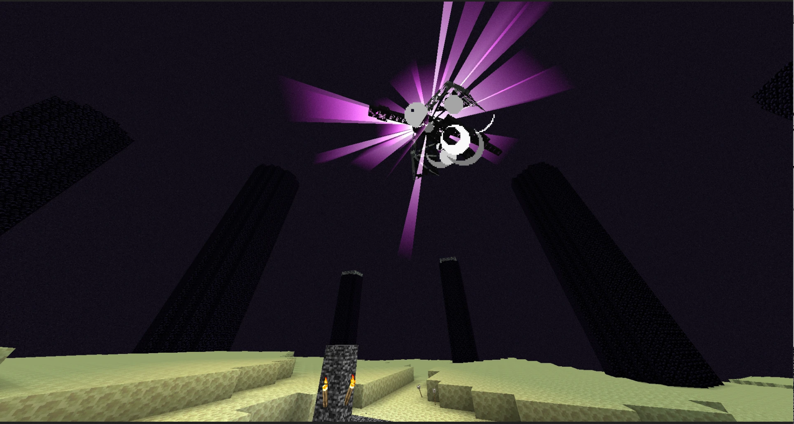

It's happening! The Mandolorian show is in Minecraft and it's amazing! On this page you will see Grogu and Mando in Minecraft, mining for diamonds and battling those mobs like naturals, all while making a stunning headline! Can they defeat the Ender Dragon? We'll just have to wait and see how it all works out.
For added suspense, The characters will be in hardcore mode. Now, here's what we have.
By day one, Mando had located Grogu, and after sleeping through the night, they were off on their exploration.

Their first challenge was food, and as they were still in the desert, it would be almost impossible to find. So, if they wanted to continue, they would have to travel somewhere else, which meant they would need fuel for the ship to fly there.
Luckily, while Mando had searched for Grogu, he had glimpsed a town a couple clicks away.
They then got ready, and Mando got his credits for the fuel, which was hopefully enough.
When they arrived at the town, they asked a merchant where they could buy fuel, and he pointed them to the shipyard, where they could buy the fuel. They then gave him a couple credits, and headed there.
Suddenly, a gang of raiders jumped out and started blasting them!
What they were unprepared for though, were Grogu's force powers as he blasted them off their feet! Mando then took this opportunity to stun them and tie them to a pole. They then made their way to their original destination, the shipyard.
When they arrived, they were immediatly greeted by the owner ofthe shipyard, and they made a deal for the fuel. Mando thanked him, and they headed back to the ship.
By the time they had arrived back at the ship, the sun was setting and Grogu was tired from dealing with the raiders, so they then went to sleep.
The next day, they then fueled the ship and made some adjustments, and they were off!
A while later, they landed and they got out of the ship. They had flewn to a plains and there appeared to be plenty of food, plants, crops, and wildlife.
Grogu, who was bored from being imprisoned in the ship for the majority of the day, rushed out and played with the ball, which he had secretly stolen from the cockpit of Mando's ship.
Luckily, Mando hadn't noticed the disappearance of Grogu's favorite toy and was busy setting up a place to stay. Grogu hoped he'd stay occupied for a while longer, and he still had a lot to do.
When Mando finished constructing the place they'd stay in, Grogu's ball was back in it's normal place. Mando's next goal was to get food, so he went hunting, leaving Grogu with the ship.
By the time Mando got back with food, Grogu was already sound asleep in the ship and it was midnight, so he then stored the food and fell asleep next to Grogu.
Once Mando fell asleep, Grogu got up to perform his heist. He knew Mando would have brought back Camelfon, some of the best meat there was, and Grogu wanted it. So he crawled over to the meat and started crawling through it. Once he found the Camelfon, he crawled back out and stuffed it all in his mouth and swallowed it. Once he had eaten the meat, he then crawled back to his cradle and fell asleep.
The next day, Mando went to check on the meat and served some to Grogu and himself, and by the time he had realized the meat was missing, Grogu had already eaten his meal, and Mando's.
Mando then raced to Grogu and told him not to eat what was not his, and got more food for himself as Grogu had of course eaten his serving.
After Mando finished eating, Grogu then apologized and went inside the ship, where he then went to take a nap.
Mando, grateful the child was asleep, then went back out to map where they were staying. Whilehe was searching, he spotted a deep cave that he estimated to go down to diamond level. This would be good for getting more supplies,and it would offer them more protection. Once he finished mapping out the place, he went back to the shipand started getting ready to mine.
When Grogu woke up, he was confused to see Mando in mining gear, aand Mando told him his plans. Grogu was also pleased he could get armor and a more comfortable cradle, so he then got ready to mine, which looked adorable. Mando then led him to the cave, and after carefully checking their supplies, they headed down.
The things down in the caves posed a problem while they were mining, so Mando stood guard as he let Grogu mine the ores.
As it turned out, Mando was right about the cave going down to diamond level, and after mining for a couple days, they had found 7 veins of diamonds and a lot of resources, and they decided to stop as their supplies were running low.
While they were going up, a huge spider crawled out and launched itself at Grogu! Mando instinctively ran to protect him and was met by a huge claw that knocked him into a stalagtite, leaving Grogu unprotected. Grogu though had made his plans for the spider and using his force powers, he destroyed a support above the monster and gravel came crashing down on it. Mando then rushed to Grogu and they ran up to the surface where they could be safe.
After the close call and they were safe, Mando consulted what they had gathered, and made Grogu, as he had wished, a new, better cradle, diamond armor, and a diamond pickaxe, and he crafted himself some advanced ammunition for his rifle and of course, a jetpack.
When Grogu was given his presents, he was overjoyed and then went into his new cradle as he wanted to test it out and he had not had good sleep for a couple days, he then fell asleep. Mando then ran a maintenance on the ship and then finally fell asleep in the cockpit, satisfied with their succesion.
They planned to go to the nether, and they had collected obsidian in the caves, meaning they could make the portal, so when they woke up the next day, they got to work.
They, after many unforgiving mistakes, finished the portal and after gearing up for the adventure ahead, went through the portal.
When the came through, they found themselves in a warped forest, and Mando could glimpse a fortress in the distance. They then collected some blocks for bridging and set off for the fortress. Then, while bridging, Mando was spotted by a Ghast and was fired upon, knocking him off his bridge and nearly destroying him. Grogu, in anger tried to retaliate but the Ghast blasted him off as well. Mando knew what to do, and he told Grogu to stay back as he loaded his rifle. Meanwhile, the Ghast was closing in on them and was getting ready to strike. Mando then took aim, and fired at the Ghast, connecting in the center of it and exploding it. With the threat gone, they then went back to their bridges and continued to the fortress.
When they reached the nether fortress, they jumped off their bridge and attacked! After finishing off the first couple mobs, they then started cautiosly looking for the Blaze spawner. This was a simple mission, and they eventually found it above a lava lake, and they charged in. What they didn't know, was that the Blazes could shoot fiery projectiles and Grogu was therefore met by fire when he charged the Blazes, but this overall worked out. By the time the Blazes turned toward Mando, he was on the spawner, hitting them from behind. Grogu then yelled a battle cry and charged them as well. Once the Blazes were dealt with, and they had the needed Blaze Rods, they started on their next mission, Ender Pearls.
Luckily, when reffered back it could be heard that they had spawned in a warped forest, a land of Enderman.
So, they headed back to the Warped forest for the Ender Pearls. When they got back, they found multiple Enderman wandering the forest, and Grogu was very afraid of them.
This left Mando to getting the Ender Pearls, so he got started.
A promblem though, was that any type of projectile does not work on Enderman, so Mando was left to using mele combat. Grogu's force was also useless, as they could teleport, givivng the Enderman the upper hand in almost every situation. Mando, though, used a strategy he had heard of, which was to dig and area where they could fit that was open but was too small for the Enderman, leaving them in range with no defenses.
Using this strategy, Mando was eventually able to farm the pearls needed, plus some extra, to craft the Eyes of Ender for the End Portal. Now that they had the Eyes, they didn't need to be in the Nether any longer, so they traveled back to base.
When they got back, they made some final preparations before searching for the End Portal, and then set off on their journey.
And, after searching for around five days, Mando noticed that the eye he threw went underground, so they started mining down where they, after some digging around, located the End Portal, and while they were looking for it, Mando found an Enchanted Golden Apple.
Just as they were placing in the eyes, Silverfish started attacking them! Mando then tried to use his rifle to blast them, but when he attacked them, more spawned, and they looked like they were getting angrier and angrier!
Grogu then solved the problem by placing the last eyes in, lighting the portal and jumped in! With no other choice, Mando followed suit and dived after him, spawning them in the End.
They spawned on an obsidian platform, somewhere inside the island. They then decided to mine up, and after getting to the surface, they were met by hundreds of Enderman and the dragon
Grogu, as he was hugely frightened by Enderman, hopped back in the hole, leaving Mando to do the fight alone.
Then the dragon, emerged, flying through the air into Mando, dealing a huge hit that knocked him into one of the End Towers. Mando, finally woken from the hit, knew what he had to do as he blasted of the ground using his jetpack as he aimed himself at the towers. The Ender Dragon though, had other plans for him as he flew into Mando, putting him on a course into the Void.
Mando, having heard of the unknown dangers of the void, immediatly reset his course back toward the towers. This time, he didn't get as close to the towers and made it look as if he were aimed at the Ender Dragon, and then used his rifle to start exploding the tower's crystals.
After the fourth crystal was gone, the Ender Dragon realized what he was doing and breathed a huge swath of Dragon's Breath at him. Mando, unprepared for the dragon's hidden arsenal, was knocked towards the ground, putting him at half a heart. Knowing he had angered multiple Enderman while flying and that the danger was not over yet, he reached for the Enchanted Golden Apple and gulped it. Immediatly he was rewarded by Regeneration, Fire Resistance, Absorbtion, and Resistance. Now stronger than ever, Mando then blasted back toward the towers and the dragon, willing to finish the fight.
He then quickly exploded the rest of the towers and launched himself at the dragon. The dragon, suprised by this new power, was caught off guard and suffered a huge barradge from Mando's rifle.
Grogu, happy with the turn of how the fight was going peeked his head out and started cheering for Mando, accidentally causing him to lose focus in the fight as the Dragon launched him up into the voidic sky.
Then the worst possible thing happened. Mando's effects wore off, and he was stuck in the air, open to the Ender Dragon's next attack.
The Ender Dragon, aware that Mando's effects had worn off, launched at him. Mando, realizing he was finished, wanted to at least go down with a fight.
Meanwhile, the dragon was getting closer and closer, about to finish Mando, when suddenly, some unknown force stopped it and pulled it down. Mando, realizing what was happening, looked toward Grogu.
There Grogu stood, using all his focus and energy to stop and defeat the Ender Dragon, facing his fears of the Enderman, and confronting an enourmous force of power.
Mando quickly decided what to do, and he took out his rifle.
The dragon roared as it, the king of the entire End dimension, was being beaten by some mere child and it started thrashing in anger.
Grogu, getting ever weaker with his opponents power, was struggling to keep it in place.
Meanwhile, Mando had loaded his rifle and was setting him aim on the dragon's head, ready to fire.
Then, Grogu collapsed, exausted from holding the dragon for so long and then the dragon dove at him, enraged by what he'd done. Then, Grogu heard a shot fired, and looked up. The Ender Dragon was no longer diving at grogu, but was falling to the ground. Mando had done it!
Mando, as he got close to the ground, fired his jetpack and made a soft landing and he ran to Grogu. Grogu, safe with Mando, then fell asleep, happy the dragon was gone.
Mando then carried him to the portal, and they went in. They had now officially beaten the game, and they came out of the portal they were back at camp with the ship, so they lied down and fell asleep, ending their long journey.
Thank you for reading this adventure, and I hoped you enjoyed.
Logan J. Sinquefield.